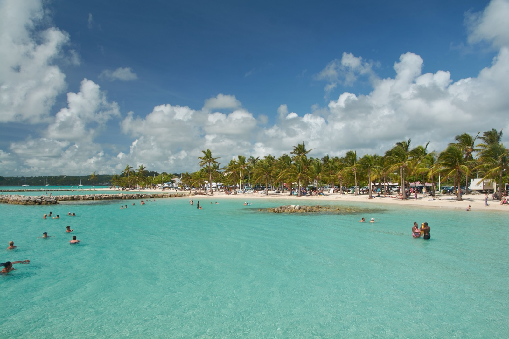

Moving to the French Caribbean
Martinique, Guadeloupe, and St Barthélemy are not French colonies. They are France, and the European Union, dropped into the tropics. Here's what that means for your visa, your taxes, your healthcare, and your cost of living on each of the three.

Most Caribbean islands ask you to earn your place. A residency application, an investment, a visa renewal every year. Three of them don't, at least not if you carry an EU passport: Martinique, Guadeloupe, and St Barthélemy are legally part of France, and therefore of the European Union. They use the euro, run on French law, teach the French curriculum, and plug into the French national health system. For a French or EU citizen that means moving here is no harder than moving to Nice. For everyone else it means the same paperwork as moving to mainland France. Which is a different path from the citizenship-by-investment islands nearby. This guide covers all three together, because the rules that matter are shared.
At a glance
- These are France. Not a territory or a dependency: Martinique and Guadeloupe are French departments and full parts of the European Union, using the euro.
- EU citizens can move tomorrow. No visa, no permit, no time limit. It is the same right you have to move to Lyon.
- Everyone else applies to France, through the ordinary French long-stay visa system, with the same requirements as moving to the mainland.
- Healthcare is excellent, since the French system applies in full. It is the strongest argument for these islands over any Anglophone alternative.
- Cost of living is high: French prices plus island freight, with groceries running well above mainland France.
- You will need French. Administration is entirely in French and English is much less widely spoken than in the Dutch or British islands.
Are Martinique, Guadeloupe and St Barth part of France?
Yes: completely. Martinique and Guadeloupe are French overseas départements and outermost regions of the EU, with the same legal status as any region of mainland France; St Barthélemy is a French overseas collectivity with a bit more fiscal autonomy. All three use the euro, issue French (EU) identity documents, and are represented in the French parliament. Practically, that gives residents three things the sovereign islands can't: the euro instead of a volatile local currency, access to the French public healthcare and social-security system, and (for EU citizens) the unconditional right to live and work there.
Do you need a visa to move to the French Caribbean?
It depends entirely on your passport. EU, EEA, and Swiss citizens need no visa at all. They have freedom of movement and move, register locally, and can work immediately. Everyone else (Americans, Britons post-Brexit, Canadians) is treated exactly as they would be moving to mainland France: 90 days visa-free as a visitor, and for anything longer a French long-stay visa (VLS-TS).
The most common route for retirees and remote workers is the long-stay visitor visa, which requires proof of stable income (a common benchmark is roughly €1,500+ per month), private health insurance for the first year, and a signed pledge not to work locally. Those coming for a job or to run a business use an employment or “Talent Passport” visa instead. The application goes through France-Visas and the French consulate serving your home region: not through any Caribbean office.
The three islands at a glance
| Island | Population | Character | Cost & tax note |
|---|---|---|---|
| Martinique | ~355,000 | The most cosmopolitan: Fort-de-France, a university hospital, direct Paris flights, rhum agricole country | High cost (imports); standard French taxes |
| Guadeloupe | ~375,000 | Butterfly-shaped and greener. Two islands joined, La Soufrière volcano, more rural and spread out | High cost (imports); standard French taxes |
| St Barthélemy | ~11,000 | Tiny, exclusive, and glossy: Gustavia, superyachts, a genuine billionaire playground | Among the priciest places in the Caribbean; special fiscal status |
Martinique: the practical choice
The largest expat-ready option: Fort-de-France is a real city, the CHU de Martinique is a full university hospital, and there are direct long-haul flights to Paris. Mount Pelée and the rhum agricole distilleries give it its character. This is where a non-EU family will find the most services, schools, and healthcare depth.
Guadeloupe, greener and more spread out
Shaped like a butterfly. Grande-Terre (flat, beachy) and Basse-Terre (mountainous, with the active La Soufrière volcano) joined by a narrow channel. It has a similar population to Martinique but feels more rural and dispersed, with its own university hospital in Pointe-à-Pitre. Good for those who want nature and space over city life.
St Barthélemy: luxury, and a special tax status
St Barth is a different proposition entirely: roughly 25 km² of exclusivity where a modest home costs a fortune and daily life is priced for the yacht crowd. Its one structural draw is fiscal. Under its collectivity status, people who have been residents for at least five years are exempt from French income tax and wealth tax. That perk only matters if you can afford to live there in the first place, which is the real barrier.
What does it cost to live in the French Caribbean?
More than you'd guess for the tropics. Because nearly everything is imported and subject to French standards, groceries and consumer goods run well above mainland-France prices. A gap large enough that it triggered widespread cost-of-living protests in Martinique in 2024. A comfortable single-person budget in Martinique or Guadeloupe realistically starts around €2,000–€2,600 per month once rent, utilities, and higher grocery bills are counted; St Barthélemy is in a different universe. The offset is real: French public services, healthcare, and infrastructure are of a standard most Caribbean islands can't match.
Is the healthcare and safety any good?
The healthcare is excellent: the same universal French system as the mainland, with full university hospitals on both Martinique and Guadeloupe, and once you're a stable resident you affiliate to it (via PUMA) rather than relying indefinitely on private cover. On safety, all three are moderate-to-safe: St Barth is extremely safe; Martinique and Guadeloupe see some property crime and occasional social unrest, but nothing resembling the region's high-crime hotspots. Buying property carries no restriction on foreigners, handled through a French notaire with roughly 7–8% in transaction costs.
So which French island is right for you?
If you hold an EU passport and want tropical living with full European rights, any of the three works, pick on lifestyle. If you're non-EU, budget for the French visa paperwork and functional French, and choose Martinique for services and healthcare depth, Guadeloupe for nature and space. St Barthélemy is only a relocation answer for the wealthy, where its five-year income-tax exemption becomes the point. What none of them offer is a shortcut: this is the French system, tropical edition. High standards, high costs, real paperwork, and a passport that opens all of Europe.
France, with better weather and a shipping surcharge.
The French Caribbean gives you EU citizenship rights, world-class healthcare and good food, at French prices with freight on top. If you hold an EU passport it is one of the easiest moves on this site. If you do not, the visa process is the same one you would face for mainland France, and Panama or Costa Rica will be dramatically simpler and cheaper. Worth comparing before you commit.
Frequently asked questions
Do you need a visa to move to the French Caribbean?
EU, EEA, and Swiss citizens need no visa and can live and work in Martinique, Guadeloupe, or St Barthélemy freely. Non-EU citizens (Americans, Britons, Canadians) need a French long-stay visa: most often the long-stay visitor visa, which requires proof of income of roughly €1,500+ per month and private health insurance, and does not permit local work.
Can Americans move to Martinique or Guadeloupe?
Yes, but via the French immigration system, not a Caribbean one. An American applies for a French long-stay visa through the French consulate at home, the same as moving to mainland France, then validates residency after arrival. Functional French is close to essential, as English is far less common than on the sovereign Caribbean islands.
Do the French Caribbean islands use the euro?
Yes. Martinique, Guadeloupe, and St Barthélemy all use the euro and are part of the European Union, unlike the nearby Dutch islands (which use the US dollar) or the sovereign nations with their own currencies.
Is St Barthélemy tax-free?
Not on arrival. St Barth's special collectivity status exempts residents from French income tax and wealth tax only after they have been resident for at least five years, and it levies its own local charges. Combined with some of the highest living costs in the Caribbean, the tax advantage is realistic only for the wealthy.
Sources & verification
Figures in this guide were checked against primary and authoritative sources on 27 July 2026. Immigration, tax, and cost figures change. Always confirm the current rules with the official body or a licensed professional before acting.
- France-Visas (official French visa portal): long-stay visa categories and requirements
- Service-Public.fr: residency and healthcare (PUMA) rules for France and its overseas territories
- Collectivité de Saint-Barthélemy (official site) status and local tax regime